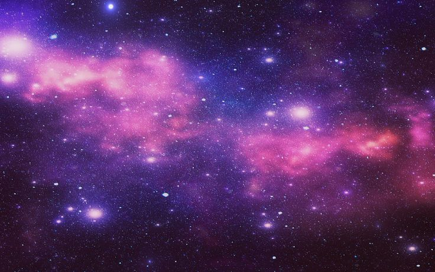
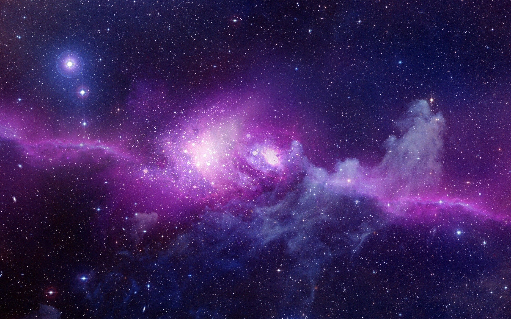

Lets Learn About The Galaxy Colors
Here are a few colors you might see in galaxy images, and what they're usually caused by:
Blue: a region with many young stars. High-mass stars live fast and die young, using fuel at a high rate to maintain
high temperatures. This causes them to emit hot radiation, which is blueish (google "blackbody radiation" to find out why).
Red: a region of old stars. The high-mass stars have swollen and cooled, and the low-mass stars were never hot to begin
with, so they both emit cool radiation, which is reddish.
patches of red/pink: a so-called HII ("H-two") region. This is a cloud of ionized hydrogen (a cloud of free protons and
electrons). When a proton captures an electron, it can give off light of various wavelengths as the electron hops down
through energy levels. One particular hop, which is pretty common, emits red light, causing the HII region to appear reddish.
HII regions are ionized in the first place by ultraviolet radiation from hot stars, so they indicate star-forming regions.
These are just a few features that happen to fall in the visible wavelength range; looking at radiation in the radio,
infrared, ultraviolet, x-ray, and gamma ray wavelength regions can reveal many more galactic characteristics.
There is some alteration of the color before it is collected. Dust can make the image redder than it would be without dust.
This happens because high-frequency (blue) light is more easily scattered by the dust than low-frequency (red) light. The color
of a few galaxies is affected by distance; an extremely distant galaxy has a high recessional velocity due to the expansion of
the universe, which causes its light to be shifted toward the red (google "relativistic Doppler shift"). Most galaxies distant
enough for this to have a noticable effect on the color of an image are very faint. The exceptions are known as "quasars", and
they produce so much radiation that they can be seen despite their extreme distance. In quasars the shift is so large that the
light that we see wasn't even in the visible range when it was emitted.
By the way, whenever you look at an astronomical image, you need to check that the colors represent visible colors. Often
astronomers will take images in wavelengths that are not visible to the eye, and then use colors to represent various wavelength bands.